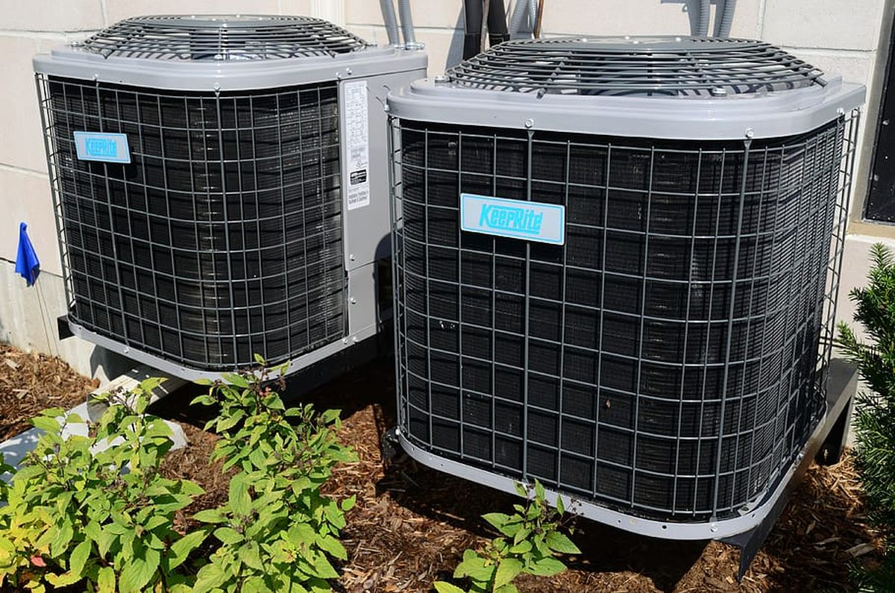
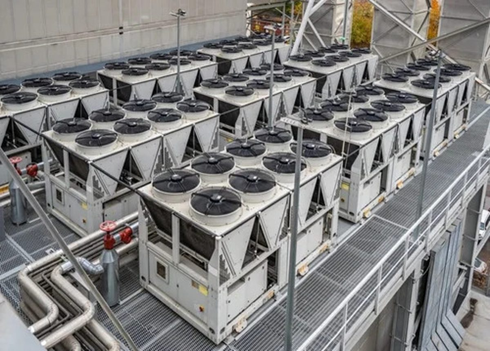

Residential Aircon Cleaning
Your home's air conditioning system is one of the most used appliances in Queensland's climate — and one of the most neglected. Regular professional cleaning removes mould, bacteria, dust and allergens, so your family breathes air that's genuinely clean.
We service all brands and models including Daikin, Mitsubishi Electric, Fujitsu, Panasonic, LG, Samsung and more.

Commercial Aircon Cleaning
A clean HVAC system is critical for staff comfort, productivity and health compliance. We work with offices, retail centres, restaurants, gyms, schools and medical facilities — providing comprehensive cleaning that keeps systems performing and your team breathing easy.
We schedule around your business hours — including evenings and weekends — to minimise disruption.

Industrial & HVACR Services
Large-scale cooling and refrigeration systems demand specialist expertise. Our industrial team handles complex HVAC plant, refrigeration systems, chiller cleaning and full HVACR maintenance programs for manufacturing, warehousing, cold storage and more.
We understand the compliance and operational requirements of industrial environments, providing thorough service with minimal production downtime.